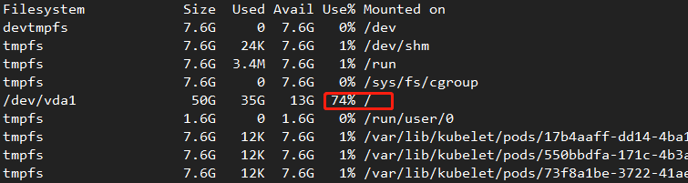
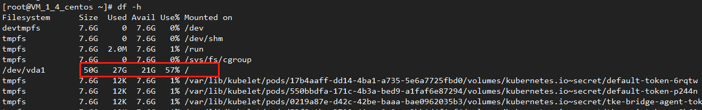
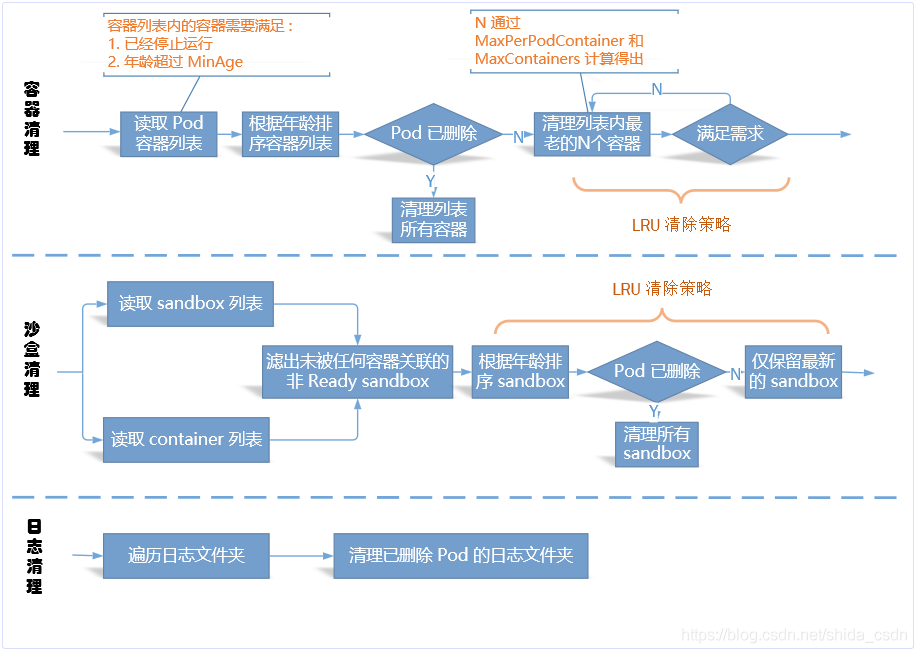

本篇文章介绍了在kubernetes中kubelet如何对镜像和容器进行垃圾回收。
kubelet垃圾回收介绍及源码分析 使用kubernetes的过程中，为了保持磁盘的空间在一个合理的使用率，kubele提供了垃圾回收机制，kubelet的垃圾回收机制分为镜像的回收和container的回收。
Kubelet 垃圾回收（Garbage Collection）是一个非常有用的功能，它负责自动清理节点上的无用镜像和容器。Kubelet 每隔 1 分钟进行一次容器清理，每隔 5 分钟进行一次镜像清理（截止到 v1.18版本，垃圾回收间隔时间还都是在源码中固化的，不可自定义配置）
我们可以在kubelet的源码src\k8s.io\kubernetes\pkg\kubelet\kubelet.go中看下这个时间的配置，其中定义了2个变量分别是ContainerGCPeriod 和ImageGCPeriod ，表示执行镜像和容器的垃圾回收间隔时间
1 2 3 4 ContainerGCPeriod = time.Minute ImageGCPeriod = 5 * time.Minute
执行垃圾回收的入口方式是StartGarbageCollection
1 2 3 4 5 6 7 8 9 10 11 12 13 14 15 16 17 18 19 20 21 22 23 24 25 26 27 28 29 30 31 32 33 34 35 36 37 38 39 40 41 42 43 44 45 46 func (kl *Kubelet) StartGarbageCollection () trueloggedContainerGCFailure := false truego wait.Until(func () truetrueif err := kl.containerGC.GarbageCollect(); err != nil { truetruetrueklog.Errorf("Container garbage collection failed: %v" , err) truetruetruekl.recorder.Eventf(kl.nodeRef, v1.EventTypeWarning, events.ContainerGCFailed, err.Error()) truetruetrueloggedContainerGCFailure = true truetrue} else { truetruetruevar vLevel klog.Level = 4 truetruetrueif loggedContainerGCFailure { truetruetruetruevLevel = 1 truetruetruetrueloggedContainerGCFailure = false truetruetrue} truetruetrueklog.V(vLevel).Infof("Container garbage collection succeeded" ) truetrue} true}, ContainerGCPeriod, wait.NeverStop) true trueif kl.kubeletConfiguration.ImageGCHighThresholdPercent == 100 { truetrueklog.V(2 ).Infof("ImageGCHighThresholdPercent is set 100, Disable image GC" ) truetruereturn true} trueprevImageGCFailed := false truego wait.Until(func () truetrueif err := kl.imageManager.GarbageCollect(); err != nil { truetruetrueif prevImageGCFailed { truetruetruetrueklog.Errorf("Image garbage collection failed multiple times in a row: %v" , err) truetruetruetrue truetruetruetruekl.recorder.Eventf(kl.nodeRef, v1.EventTypeWarning, events.ImageGCFailed, err.Error()) truetruetrue} else { truetruetruetrueklog.Errorf("Image garbage collection failed once. Stats initialization may not have completed yet: %v" , err) truetruetrue} truetruetrueprevImageGCFailed = true truetrue} else { truetruetruevar vLevel klog.Level = 4 truetruetrueif prevImageGCFailed { truetruetruetruevLevel = 1 truetruetruetrueprevImageGCFailed = false truetruetrue} truetruetrueklog.V(vLevel).Infof("Image garbage collection succeeded" ) truetrue} true}, ImageGCPeriod, wait.NeverStop) }
镜像收集 Kubernetes 通过 imageManager 与 cadvisor 协作的方式管理所有镜像的生命周期。
收集垃圾镜像的策略考虑两个因素： HighThresholdPercent 和 LowThresholdPercent。磁盘使用率超过高阈值将触发垃圾收集策略。该策略将删除最近最少使用的镜像直至满足低阈值。
kl.imageManager.GarbageCollect
上面已经分析了容器回收的主要流程，下面会继续分析镜像回收的流程，kl.imageManager.GarbageCollect 是镜像回收任务启动的方法，镜像回收流程是在 imageManager 中进行的，首先了解下 imageManager 的初始化，imageManager 也是在 NewMainKubelet 方法中进行初始化的。
k8s.io/kubernetes/pkg/kubelet/kubelet.go
1 2 3 4 5 6 7 8 9 10 11 12 13 14 15 16 func NewMainKubelet(){ ...... // 初始化时需要指定三个参数，三个参数已经在上文中提到过 imageGCPolicy := images.ImageGCPolicy { MinAge: kubeCfg.ImageMinimumGCAge .Duration , HighThresholdPercent: int(kubeCfg.ImageGCHighThresholdPercent ), LowThresholdPercent: int(kubeCfg.ImageGCLowThresholdPercent ), } ...... imageManager, err := images.NewImageGCManager (klet.containerRuntime , klet.StatsProvider , kubeDeps.Recorder , nodeRef, imageGCPolicy, crOptions.PodSandboxImage ) if err != nil { return nil, fmt.Errorf ("failed to initialize image manager: %v", err) } klet.imageManager = imageManager ...... }
kl.imageManager.GarbageCollect 方法的主要逻辑为：
首先调用 im.statsProvider.ImageFsStats 获取容器镜像存储目录挂载点文件系统的磁盘信息； 获取挂载点的 available 和 capacity 信息并计算其使用率； 若使用率大于 HighThresholdPercent，首先根据 LowThresholdPercent 值计算需要释放的磁盘量，然后调用 im.freeSpace 释放未使用的 image 直到满足磁盘空闲率； k8s.io/kubernetes/pkg/kubelet/images/image_gc_manager.go:269
1 2 3 4 5 6 7 8 9 10 11 12 13 14 15 16 17 18 19 20 21 22 23 24 25 26 27 28 29 30 31 32 33 34 35 36 37 38 39 40 41 42 43 44 45 func (im *realImageGCManager) GarbageCollect () error fsStats, err := im.statsProvider.ImageFsStats() if err != nil { return err } var capacity, available int64 if fsStats.CapacityBytes != nil { capacity = int64 (*fsStats.CapacityBytes) } if fsStats.AvailableBytes != nil { available = int64 (*fsStats.AvailableBytes) } if available > capacity { available = capacity } if capacity == 0 { err := goerrors.New("invalid capacity 0 on image filesystem" ) im.recorder.Eventf(im.nodeRef, v1.EventTypeWarning, events.InvalidDiskCapacity, err.Error()) return err } usagePercent := 100 - int (available*100 /capacity) if usagePercent >= im.policy.HighThresholdPercent { amountToFree := capacity*int64 (100 -im.policy.LowThresholdPercent)/100 - available freed, err := im.freeSpace(amountToFree, time.Now()) if err != nil { return err } if freed < amountToFree { err := fmt.Errorf("failed to garbage collect required amount of images. Wanted to free %d bytes, but freed %d bytes" , amountToFree, freed) im.recorder.Eventf(im.nodeRef, v1.EventTypeWarning, events.FreeDiskSpaceFailed, err.Error()) return err } } return nil }
im.freeSpace
im.freeSpace 是回收未使用镜像的方法，其主要逻辑为：
首先调用 im.detectImages 获取已经使用的 images 列表作为 imagesInUse； 遍历 im.imageRecords 根据 imagesInUse 获取所有未使用的 images 信息，im.imageRecords 记录 node 上所有 images 的信息； 根据使用时间对未使用的 images 列表进行排序； 遍历未使用的 images 列表然后调用 im.runtime.RemoveImage 删除镜像，直到回收完所有未使用 images 或者满足空闲率； k8s.io/kubernetes/pkg/kubelet/images/image_gc_manager.go:328
1 2 3 4 5 6 7 8 9 10 11 12 13 14 15 16 17 18 19 20 21 22 23 24 25 26 27 28 29 30 31 32 33 34 35 36 37 38 39 40 41 42 43 44 45 46 47 48 49 50 51 52 53 54 func (im *realImageGCManager) freeSpace (bytesToFree int64 , freeTime time.Time) (int64 , error) imagesInUse, err := im.detectImages(freeTime) if err != nil { return 0 , err } im.imageRecordsLock.Lock() defer im.imageRecordsLock.Unlock() images := make ([]evictionInfo, 0 , len (im.imageRecords)) for image, record := range im.imageRecords { if isImageUsed(image, imagesInUse) { klog.V(5 ).Infof("Image ID %s is being used" , image) continue } images = append (images, evictionInfo{ id: image, imageRecord: *record, }) } sort.Sort(byLastUsedAndDetected(images)) var deletionErrors []error spaceFreed := int64 (0 ) for _, image := range images { if image.lastUsed.Equal(freeTime) || image.lastUsed.After(freeTime) { continue } if freeTime.Sub(image.firstDetected) < im.policy.MinAge { continue } err := im.runtime.RemoveImage(container.ImageSpec{Image: image.id}) if err != nil { deletionErrors = append (deletionErrors, err) continue } delete (im.imageRecords, image.id) spaceFreed += image.size if spaceFreed >= bytesToFree { break } } if len (deletionErrors) > 0 { return spaceFreed, fmt.Errorf("wanted to free %d bytes, but freed %d bytes space with errors in image deletion: %v" , bytesToFree, spaceFreed, errors.NewAggregate(deletionErrors)) } return spaceFreed, nil }
容器收集 容器收集策略考虑三个用户自定义变量。MinAge 是容器可以被收集的最小运行时间。MaxPerPodContainer 是每个pod (UID, container name) 中允许拥有死亡容器的最大数。MaxContainers全局死亡容器的最大数。通过将 MinAge 设置为零并将 MaxPerPodContainer 和 MaxContainers 分别设置为小于零，可以单独禁用这些变量。
Kubelet作用于未能被识别的，被删除的或超出上述变量边界的容器。最久远的容器首先被移除。当每个 pod(MaxPerPodContainer) 允许的最大容器数超出全局死亡容器的界限(MaxContainers) 时，MaxPerPodContainer 和 MaxContainer 可能会相互冲突。MaxPerPodContainer 可以在根据以下情形进行调整：最坏的情况是将 MaxPerPodContainer 降级至1并排除最旧的容器。此外，已被删除的 pod 所拥有的容器一旦比MinAge更旧，也会被移除。
kl.containerGC.GarbageCollect
kl.containerGC.GarbageCollect 调用的是 ContainerGC manager 中的方法，ContainerGC 是在 NewMainKubelet 中初始化的，ContainerGC 在初始化时需要指定一个 runtime，该 runtime 即 ContainerRuntime，在 kubelet 中即 kubeGenericRuntimeManager，也是在 NewMainKubelet 中初始化的。
k8s.io/kubernetes/pkg/kubelet/kubelet.go
1 2 3 4 5 6 7 8 9 10 11 12 13 14 15 16 17 func NewMainKubelet () ...... containerGCPolicy := kubecontainer.ContainerGCPolicy{ MinAge: minimumGCAge.Duration, MaxPerPodContainer: int (maxPerPodContainerCount), MaxContainers: int (maxContainerCount), } containerGC, err := kubecontainer.NewContainerGC(klet.containerRuntime, containerGCPolicy, klet.sourcesReady) if err != nil { return nil , err } ...... }
以下是 ContainerGC 的初始化以及 GarbageCollect 的启动：
k8s.io/kubernetes/pkg/kubelet/container/container_gc.go:68
1 2 3 4 5 6 7 8 9 10 11 12 13 14 15 func NewContainerGC(runtime Runtime, policy ContainerGCPolicy, sourcesReadyProvider SourcesReadyProvider) (ContainerGC, error) { if policy.MinAge < 0 { return nil , fmt.Errorf("invalid minimum garbage collection age: %v" , policy.MinAge) } return &realContainerGC{ runtime: runtime, policy: policy, sourcesReadyProvider: sourcesReadyProvider, }, nil } func (cgc *realContainerGC) GarbageCollect() error { return cgc.runtime.GarbageCollect(cgc.policy, cgc.sourcesReadyProvider.AllReady(), false ) }
可以看到，ContainerGC 中的 GarbageCollect 最终是调用 runtime 中的 GarbageCollect 方法，runtime 即 kubeGenericRuntimeManager。
cgc.runtime.GarbageCollect
cgc.runtime.GarbageCollect 的实现是在 kubeGenericRuntimeManager 中，其主要逻辑为：
回收 pod 中的 container； 回收 pod 中的 sandboxes； 回收 pod 以及 container 的 log dir； k8s.io/kubernetes/pkg/kubelet/kuberuntime/kuberuntime_gc.go:378
1 2 3 4 5 6 7 8 9 10 11 12 13 14 15 16 17 18 func (cgc *containerGC) GarbageCollect (gcPolicy kubecontainer.ContainerGCPolicy, allSourcesReady bool , evictTerminatedPods bool ) error errors := []error{} if err := cgc.evictContainers(gcPolicy, allSourcesReady, evictTerminatedPods); err != nil { errors = append (errors, err) } if err := cgc.evictSandboxes(evictTerminatedPods); err != nil { errors = append (errors, err) } if err := cgc.evictPodLogsDirectories(allSourcesReady); err != nil { errors = append (errors, err) } return utilerrors.NewAggregate(errors) }
kubelet垃圾回收的参数配置实践 src\k8s.io\kubernetes\pkg\kubelet\apis\config\fuzzer\fuzzer.go 配置了kubelet参数的默认配置
1 2 3 4 5 6 7 8 9 10 11 12 13 14 15 16 17 18 19 20 21 22 23 24 25 26 27 28 29 30 31 32 33 34 35 36 37 38 39 40 41 42 43 44 45 46 47 48 49 50 51 52 53 54 55 56 57 58 59 60 61 62 63 64 65 66 67 68 69 70 71 72 73 74 75 func Funcs(codecs runtimeserializer.CodecFactory) []interface{} { truereturn []interface{}{ truetrue// provide non-empty values for fields with defaults, so the defaulter doesn't change values during round-trip truetruefunc(obj *kubeletconfig.KubeletConfiguration, c fuzz.Continue) { truetruetruec.FuzzNoCustom(obj) truetruetrueobj.EnableServer = true truetruetrueobj.Authentication.Anonymous.Enabled = true truetruetrueobj.Authentication.Webhook.Enabled = false truetruetrueobj.Authentication.Webhook.CacheTTL = metav1.Duration{Duration: 2 * time.Minute} truetruetrueobj.Authorization.Mode = kubeletconfig.KubeletAuthorizationModeAlwaysAllow truetruetrueobj.Authorization.Webhook.CacheAuthorizedTTL = metav1.Duration{Duration: 5 * time.Minute} truetruetrueobj.Authorization.Webhook.CacheUnauthorizedTTL = metav1.Duration{Duration: 30 * time.Second} truetruetrueobj.Address = "0.0.0.0" truetruetrueobj.VolumeStatsAggPeriod = metav1.Duration{Duration: time.Minute} truetruetrueobj.RuntimeRequestTimeout = metav1.Duration{Duration: 2 * time.Minute} truetruetrueobj.CPUCFSQuota = true truetruetrueobj.EventBurst = 10 truetruetrueobj.EventRecordQPS = 5 truetruetrueobj.EnableControllerAttachDetach = true truetruetrueobj.EnableDebuggingHandlers = true truetruetrueobj.FileCheckFrequency = metav1.Duration{Duration: 20 * time.Second} truetruetrueobj.HealthzBindAddress = "127.0.0.1" truetruetrueobj.HealthzPort = 10248 truetruetrueobj.HTTPCheckFrequency = metav1.Duration{Duration: 20 * time.Second} truetruetrueobj.ImageMinimumGCAge = metav1.Duration{Duration: 2 * time.Minute} truetruetrueobj.ImageGCHighThresholdPercent = 85 truetruetrueobj.ImageGCLowThresholdPercent = 80 truetruetrueobj.KernelMemcgNotification = false truetruetrueobj.MaxOpenFiles = 1000000 truetruetrueobj.MaxPods = 110 truetruetrueobj.PodPidsLimit = -1 truetruetrueobj.NodeStatusUpdateFrequency = metav1.Duration{Duration: 10 * time.Second} truetruetrueobj.NodeStatusReportFrequency = metav1.Duration{Duration: time.Minute} truetruetrueobj.NodeLeaseDurationSeconds = 40 truetruetrueobj.CPUManagerPolicy = "none" truetruetrueobj.CPUManagerReconcilePeriod = obj.NodeStatusUpdateFrequency truetruetrueobj.NodeStatusMaxImages = 50 truetruetrueobj.TopologyManagerPolicy = kubeletconfig.NoneTopologyManagerPolicy truetruetrueobj.QOSReserved = map [string]string{ truetruetruetrue"memory" : "50%" , truetruetrue} truetruetrueobj.OOMScoreAdj = int32(qos.KubeletOOMScoreAdj) truetruetrueobj.Port = ports.KubeletPort truetruetrueobj.ReadOnlyPort = ports.KubeletReadOnlyPort truetruetrueobj.RegistryBurst = 10 truetruetrueobj.RegistryPullQPS = 5 truetruetrueobj.ResolverConfig = kubetypes.ResolvConfDefault truetruetrueobj.SerializeImagePulls = true truetruetrueobj.StreamingConnectionIdleTimeout = metav1.Duration{Duration: 4 * time.Hour} truetruetrueobj.SyncFrequency = metav1.Duration{Duration: 1 * time.Minute} truetruetrueobj.ContentType = "application/vnd.kubernetes.protobuf" truetruetrueobj.KubeAPIQPS = 5 truetruetrueobj.KubeAPIBurst = 10 truetruetrueobj.HairpinMode = v1beta1.PromiscuousBridge truetruetrueobj.EvictionHard = kubeletconfigv1beta1.DefaultEvictionHard truetruetrueobj.EvictionPressureTransitionPeriod = metav1.Duration{Duration: 5 * time.Minute} truetruetrueobj.MakeIPTablesUtilChains = true truetruetrueobj.IPTablesMasqueradeBit = kubeletconfigv1beta1.DefaultIPTablesMasqueradeBit truetruetrueobj.IPTablesDropBit = kubeletconfigv1beta1.DefaultIPTablesDropBit truetruetrueobj.CgroupsPerQOS = true truetruetrueobj.CgroupDriver = "cgroupfs" truetruetrueobj.EnforceNodeAllocatable = kubeletconfigv1beta1.DefaultNodeAllocatableEnforcement truetruetrueobj.StaticPodURLHeader = make(map [string][]string) truetruetrueobj.ContainerLogMaxFiles = 5 truetruetrueobj.ContainerLogMaxSize = "10Mi" truetruetrueobj.ConfigMapAndSecretChangeDetectionStrategy = "Watch" truetruetrueobj.AllowedUnsafeSysctls = []string{} truetruetrueobj.VolumePluginDir = kubeletconfigv1beta1.DefaultVolumePluginDir truetruetrueif obj.Logging.Format == "" { truetruetruetrueobj.Logging.Format = "text" truetruetrue} truetruetrueobj.EnableSystemLogHandler = true truetrue}, true} }
镜像垃圾回收参数配置 —image-gc-high-threshold，默认 85，高于此阈值将进行回收 —image-gc-low-threshold，默认 80，低于此阈值不进行会 —minimum-image-ttl-duration，默认 2m0s，回收 image 最小年龄 1 2 3 obj.ImageGCHighThresholdPercent = 85 obj.ImageGCLowThresholdPercent = 80 obj.ImageMinimumGCAge = metav1.Duration{Duration: 2 * time.Minute}
我们在节点上修改kubelet的镜像回收配置
1 2 3 [Service] EnvironmentFile =-/etc/kubernetes/kubeletExecStart =/usr/bin/kubelet ${SERIALIZE_IMAGE_PULLS} ${REGISTER_SCHEDULABLE} ${V} ${CLOUD_PROVIDER} ${FAIL_SWAP_ON} ${AUTHORIZATION_MODE} ${CLOUD_CONFIG} ${CLUSTER_DNS} ${IMAGE_PULL_PROGRESS_DEADLINE} ${HOSTNAME_OVERRIDE} ${EVICTION_HARD} ${CLIENT_CA_FILE} ${NON_MASQUERADE_CIDR} ${KUBE_RESERVED} ${MAX_PODS} ${AUTHENTICATION_TOKEN_WEBHOOK} ${POD_INFRA_CONTAINER_IMAGE} ${ANONYMOUS_AUTH} ${KUBECONFIG} ${NETWORK_PLUGIN} ${CLUSTER_DOMAIN} --image-gc-high-threshold =70 --image-gc-low-threshold =65
开始磁盘的使用率如下

执行垃圾回收后，磁盘使用率降到了57%

查看kubelet日志可以发现执行垃圾回收成功
1 Sep 10 11 :15 :17 VM_1_4_centos kubelet[1134461 ]: I0910 11 :15 :17.054567 1134461 kubelet.go:1323 ] Image garbage collection succeeded
容器垃圾回收参数配置 
minimum-container-ttl-duration：容器可被回收的最小生存年龄，默认是 0 分钟，这意味着每个死亡容器都会被立即执行垃圾回收 maximum-dead-containers-per-container：每个 Pod 要保留的死亡容器的最大数量，默认值为 1 maximum-dead-containers：节点可保留的死亡容器的最大数量，默认值是 -1，这意味着节点没有限制死亡容器数量 1 2 3 --maximum-dead-containers ="-1" --maximum-dead-containers-per-container ="1" --minimum-container-ttl-duration ="0s"
注意：当MaxPerPodContainer与MaxContainers发生冲突时，Kubelet 会自动调整MaxPerPodContainer的取值以满足MaxContainers要求。
还是以 nginx 为例，创建一个 nginx 服务：
1 2 3 4 5 6 root@ shida-machine:~# kubectl run nginx --image nginxdeployment.apps/nginx created root@ shida-machine:~# docker ps -a | grep nginx7 bef0308d9ea nginx "nginx -g 'daemon of…" 16 seconds ago Up 14 seconds k8s_nginx_nginx-7 db9fccd9b-p2p2t_default_69c38c2b-a64e-11e9 -94 bd-000 c29ce064a_07e65 e0db52c2 k8s.gcr.io/pause:3.1 "/pause" 2 minutes ago Up 2 minutes k8s_POD_nginx-7 db9fccd9b-p2p2t_default_69c38c2b-a64e-11e9 -94 bd-000 c29ce064a_012345
可以看到，Kubelet 启动了一个 sandbox 以及一个 nginx 实例。
手动杀死 nginx 实例，模拟容器异常退出：
1 2 3 4 5 6 7 root@ shida-machine:~# docker kill 7 bef0308d9ea7 bef0308d9earoot@ shida-machine:~# docker ps -a | grep nginx408 b23b2b72a nginx "nginx -g 'daemon of…" 3 seconds ago Up 2 seconds k8s_nginx_nginx-7 db9fccd9b-p2p2t_default_69c38c2b-a64e-11e9 -94 bd-000 c29ce064a_17 bef0308d9ea nginx "nginx -g 'daemon of…" 2 minutes ago Exited (137 ) 15 seconds ago k8s_nginx_nginx-7 db9fccd9b-p2p2t_default_69c38c2b-a64e-11e9 -94 bd-000 c29ce064a_07e65 e0db52c2 k8s.gcr.io/pause:3.1 "/pause" 5 minutes ago Up 5 minutes k8s_POD_nginx-7 db9fccd9b-p2p2t_default_69c38c2b-a64e-11e9 -94 bd-000 c29ce064a_0123456
可以看到 Kubelet 重新拉起了一个新的 nginx 实例。
等待几分钟，发现 Kubelet 并未清理异常退出的 nginx 容器（因为此时仅有一个 dead container）。
1 2 3 4 5 root@ shida-machine:~# docker ps -a | grep nginx408 b23b2b72a nginx "nginx -g 'daemon of…" 3 minutes ago Up 3 minutes k8s_nginx_nginx-7 db9fccd9b-p2p2t_default_69c38c2b-a64e-11e9 -94 bd-000 c29ce064a_17 bef0308d9ea nginx "nginx -g 'daemon of…" 5 minutes ago Exited (137 ) 3 minutes ago k8s_nginx_nginx-7 db9fccd9b-p2p2t_default_69c38c2b-a64e-11e9 -94 bd-000 c29ce064a_07e65 e0db52c2 k8s.gcr.io/pause:3.1 "/pause" 8 minutes ago Up 8 minutes k8s_POD_nginx-7 db9fccd9b-p2p2t_default_69c38c2b-a64e-11e9 -94 bd-000 c29ce064a_01234
继续杀死当前 nginx 实例：
1 2 3 4 5 6 7 root@ shida-machine:~# docker kill 408 b23b2b72a408 b23b2b72aroot@ shida-machine:~# docker ps -a | grep nginxe064e376819f nginx "nginx -g 'daemon of…" 9 seconds ago Up 7 seconds k8s_nginx_nginx-7 db9fccd9b-p2p2t_default_69c38c2b-a64e-11e9 -94 bd-000 c29ce064a_2 408 b23b2b72a nginx "nginx -g 'daemon of…" 5 minutes ago Exited (137 ) 40 seconds ago k8s_nginx_nginx-7 db9fccd9b-p2p2t_default_69c38c2b-a64e-11e9 -94 bd-000 c29ce064a_17e65 e0db52c2 k8s.gcr.io/pause:3.1 "/pause" 10 minutes ago Up 10 minutes k8s_POD_nginx-7 db9fccd9b-p2p2t_default_69c38c2b-a64e-11e9 -94 bd-000 c29ce064a_0123456
这下看到效果了，仍然只有一个退出的容器被保留，而且被清理掉的是最老的死亡容器，这与之前的分析是一致的！
删除这个 nginx Deployment，会发现所有的 nginx 容器都会被清理：
1 2 3 4 5 root@shida-machine:~ deployment.extensions "nginx" deleted root@shida-machine:~ root@shida-machine:~ 1234
进一步，我们修改 Kubelet 参数，设置 maximum-dead-containers 为 0，这就告诉 Kubelet 清理所有死亡容器。
重复前边的实验步骤：
1 2 3 4 5 6 7 8 9 10 11 root@ shida-machine:~# kubectl run nginx --image nginxdeployment.apps/nginx created root@ shida-machine:~# docker ps -a | grep nginx8 de9ae8e2c9b nginx "nginx -g 'daemon of…" 33 seconds ago Up 32 seconds k8s_nginx_nginx-7 db9fccd9b-jl2xn_default_0cd67a29-a6a2-11e9 -94 bd-000 c29ce064a_0d2cdfafdbe50 k8s.gcr.io/pause:3.1 "/pause" 41 seconds ago Up 38 seconds k8s_POD_nginx-7 db9fccd9b-jl2xn_default_0cd67a29-a6a2-11e9 -94 bd-000 c29ce064a_0 root@ shida-machine:~# docker kill 8 de9ae8e2c9b8 de9ae8e2c9broot@ shida-machine:~# docker ps -a | grep nginx95 ee5bd2cab2 nginx "nginx -g 'daemon of…" About a minute ago Up About a minute k8s_nginx_nginx-7 db9fccd9b-jl2xn_default_0cd67a29-a6a2-11e9 -94 bd-000 c29ce064a_1d2cdfafdbe50 k8s.gcr.io/pause:3.1 "/pause" 2 minutes ago Up About a minute k8s_POD_nginx-7 db9fccd9b-jl2xn_default_0cd67a29-a6a2-11e9 -94 bd-000 c29ce064a_0 12345678910
结果显示，nginx Pod 的所有死亡容器都会被清理，因为我们已经强制要求节点不保留任何死亡容器，与预期一致！
那对于手动运行的容器呢？我们通过 docker run 运行 nginx：
1 2 3 4 5 root@ shida-machine:~# docker run --name nginx -d nginx46 ebb365f6be060a6950f44728e4f11e4666bf2fb007cad557ffc65ecf8aded8root@ shida-machine:~# docker ps | grep nginx46 ebb365f6be nginx "nginx -g 'daemon of…" 9 seconds ago Up 6 seconds 80 /tcp nginx1234
杀死该容器：
1 2 3 4 5 root@ shida-machine:~# docker kill 46 ebb365f6be46 ebb365f6beroot@ shida-machine:~# docker ps -a | grep nginx46 ebb365f6be nginx "nginx -g 'daemon of…" About a minute ago Exited (137 ) 18 seconds ago nginx1234
经过几分钟，我们发现该死亡容器还是会存在的，Kubelet 不会清理这类容器！
小结
Kubelet 每 5 分钟进行一次镜像清理。当磁盘使用率超过上限阈值，Kubelet 会按照 LRU 策略逐一清理没有被任何容器所使用的镜像，直到磁盘使用率降到下限阈值或没有空闲镜像可以清理。Kubelet 认为镜像可被清理的标准是未被任何 Pod 容器（包括那些死亡了的容器）所引用，那些非 Pod 容器（如用户通过 docker run 启动的容器）是不会被用来计算镜像引用关系的。也就是说，即便用户运行的容器使用了 A 镜像，只要没有任何 Pod 容器使用到 A，那 A 镜像对于 Kubelet 而言就是可被回收的。但是我们无需担心手动运行容器使用的镜像会被意外回收，因为 Kubelet 的镜像删除是非 force 类型的，底层容器运行时会使存在容器关联的镜像删除操作失败（因为 Docker 会认为仍有容器使用着 A 镜像）。
Kubelet 每 1 分钟执行一次容器清理。根据启动配置参数，Kubelet 会按照 LRU 策略依次清理每个 Pod 内的死亡容器，直到达到死亡容器限制数要求，对于 sandbox 容器，Kubelet 仅会保留最新的（这不受 GC 策略的控制）。对于日志目录，只要已经没有 Pod 继续占用，就将其清理。对于非 Pod 容器（如用户通过 docker run 启动的容器）不会被 Kubelet 垃圾回收。
参考文档 https://blog.csdn.net/shida_csdn/article/details/99734411
https://zhuanlan.zhihu.com/p/110869559
欢迎访问 Vashon 的博客，博客和文章在完善中，请大家耐心等待。 若有问题或者有好的建议欢迎留言，笔者看到之后会及时回复。